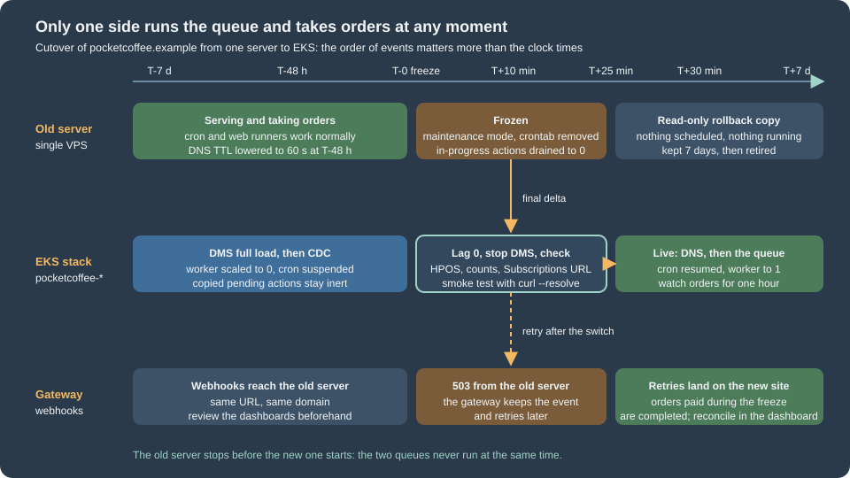

Cloud: Migrating a Store from a Single Server
|
This content was generated with the assistance of AI and should be verified against the official documentation before being relied on in production. |
This page was written against WooCommerce 11.2.1 on WordPress 7.1.4 (the security release of 2026-10-28; the site pages
use 7.1.3 as their baseline), PHP 8.4 for the image, RDS for MariaDB 11.8 or RDS for MySQL 8.4 as the target, Amazon EKS with
Kubernetes 1.36 or 1.37, and Action Scheduler 4.1.0 as bundled by WooCommerce 11.2.1. It was checked on 2026-10-29. The shell
scripts were checked with bash -n and shellcheck and the JSON documents with jq. The WooCommerce, Action Scheduler and
WP-CLI behaviour was checked against the source of the WooCommerce 11.2.1 plugin and the official documentation. Nothing was
run against a real AWS account, a real payment gateway or a real WooCommerce Subscriptions installation (a paid extension),
so the sections on those say what the documentation states and where you must test.
The WordPress side of this move, which this page does not repeat, is on
Migrating from a Single Server: the inventory of the old machine, the
dump and import with RDS TLS, aws s3 sync for the media, wp search-replace, rebuilding wp-config.php, the DNS TTL
rules, the curl --resolve smoke test and the generic rollback table. That page ends with "a shop writes orders continuously,
which makes the cutover window the hard part". This page is that hard part for Pocket Coffee, the fictitious specialty-coffee
shop of the other WooCommerce pages: the single server that runs pocketcoffee.example moves to the cluster pocketcoffee-prod
(namespace pocketcoffee, release pocketcoffee) in eu-west-1, with the database in RDS (pocketcoffee-prod, database
pocketcoffee, users wc_app and wc_migrate) and the Action Scheduler worker Deployment pocketcoffee-worker described on
Cloud: Action Scheduler Workers on Kubernetes. The overview
of the target is on Cloud: Deployment Overview.
What a store adds to a migration
A blog survives a lost comment. A store cannot lose or duplicate three kinds of event, and each has a different owner:
-
An order and its payment. The customer paid, the gateway knows, and the store must show a paid order exactly once.
-
A scheduled action. A renewal charge, a "your order shipped" e-mail, an outgoing webhook to the ERP or the warehouse. They are rows of Action Scheduler in the same database, so they travel with the dump, and they must run on one side only.
-
A call from outside. A payment gateway notifies the store of a payment through a URL. The URL, the domain and the moment DNS changes decide whether that call reaches a store that can process it.
The WordPress page treats the data as one pile moved by a dump or by DMS. For a store the rule that keeps all three safe is short: at any moment exactly one side takes orders and exactly one side runs the queue. The rest of the page is how to make that true across the freeze, the data copy, the DNS switch and a rollback.

Choosing the way the data moves
The two methods are the ones of the WordPress page, and the choice is the same except that the cost of downtime is now measured in orders. A shop that takes ten orders an hour can accept a one-hour maintenance window at night; a shop with a steady flow, or a promotion in the calendar, cannot.
| Maintenance window with dump and import | AWS DMS full load and change data capture | |
|---|---|---|
Downtime |
The whole dump and import, plus checks. Measure it in a rehearsal with a copy of the real database. |
Freeze, wait for lag zero, stop the task, checks. Minutes, independent of the database size. |
Orders during the move |
None: the old store shows the maintenance page. |
None either: you still freeze the old store at the end. DMS shortens the copy, it does not allow two writers. |
Requirements on the old server |
A dump user. |
Binary logging with |
Typical failure |
The import is slower than the rehearsal because the rehearsal database was smaller. |
CDC lag that never reaches zero because of a long transaction, or a limited-size LOB setting that truncates a value. |
Fits |
Small and medium stores, a window the business accepts. |
Large order tables, a short window, or a long period of parallel running for verification. |
Whichever you choose, both ends need the same thing at the moment of the final copy: no write on the old side. DMS replays what the old database writes until you stop the task, so a single order that sneaks in after the freeze is copied too, and an order that is created on the new side before the task is stopped can be overwritten by a replayed row. The freeze is not optional with DMS; it is what makes lag zero mean something. The task in the WordPress page is the template. The settings below are the ones that matter for a store, and the table mapping leaves out the sessions table:
{
"TargetMetadata": {
"TargetSchema": "",
"SupportLobs": true,
"FullLobMode": false,
"LimitedSizeLobMode": true,
"LobMaxSize": 1024,
"BatchApplyEnabled": false
},
"FullLoadSettings": {
"TargetTablePrepMode": "DO_NOTHING",
"MaxFullLoadSubTasks": 8,
"TransactionConsistencyTimeout": 600
},
"ChangeProcessingTuning": {
"MemoryLimitTotal": 1024,
"MemoryKeepTime": 60
},
"ValidationSettings": {
"EnableValidation": true,
"ValidationMode": "ROW_LEVEL",
"ThreadCount": 5,
"FailureMaxCount": 1000
},
"Logging": {
"EnableLogging": true
}
}{
"rules": [
{
"rule-type": "selection",
"rule-id": "1",
"rule-name": "include-store-tables",
"object-locator": { "schema-name": "pocketcoffee", "table-name": "%" },
"rule-action": "include"
},
{
"rule-type": "selection",
"rule-id": "2",
"rule-name": "exclude-sessions",
"object-locator": { "schema-name": "pocketcoffee", "table-name": "wp_woocommerce_sessions" },
"rule-action": "exclude"
}
]
}The reasons for each choice:
-
TargetTablePrepModeofDO_NOTHINGand a schema created from a--no-datadump first, as on the WordPress page: DMS does not recreate secondary indexes, and WooCommerce relies on many of them (the order tables,wc_order_product_lookup, the attribute lookup tables). -
LobMaxSizeis in kilobytes (the documentation example uses 32). Order meta values,wp_postmetarows and the serialised data of some extensions can be large; measureMAX(LENGTH(meta_value))onwp_postmetaand, with HPOS, onwp_wc_orders_meta, and set the limit above it. A value above the limit is truncated, which for an order is silent data loss. -
ValidationSettingsmakes DMS compare rows after the load. It is a safety net on top of your own counts below, not a replacement, and it adds load on both databases. -
wp_woocommerce_sessionsis excluded: it is the highest-churn table of a shop (every visitor with a cart writes to it), it contributes most of the CDC volume and it is the one table whose loss costs little. A logged-in customer’s cart is also saved as the user meta_woocommerce_persistent_cart_<blog id>(checked in the 11.2.1 source), so it survives; the cart of an anonymous visitor does not. The target table must exist (the schema step), and the session store the other pages settle on (Cloud: Database, HPOS and Sessions) decides whether this matters at all.
Every DMS task also needs a primary key in each table for CDC. All WooCommerce core tables have one; tables created by extensions may not, so list the tables without a primary key in the inventory and fix or exclude them.
The HPOS state travels with the database
High-performance order storage is two options in wp_options, and the cutover must not change either of them:
woocommerce_custom_orders_table_enabled (which store is authoritative) and
woocommerce_custom_orders_table_data_sync_enabled (whether the other store is kept in step, the "compatibility mode" of the
settings screen). Both are checked in the 11.2.1 source and described on
HPOS: High-Performance Order Storage.
The rules for a migration are:
-
Move the state as it is. Do not switch HPOS on, off or the compatibility mode on the day of the move. Changing the storage is its own project, rehearsed on a copy; doing it inside a cutover adds a second risk to the first.
-
Read the state on the old server before anything else with
wp wc hpos status: it prints whether HPOS is enabled, whether compatibility mode is enabled, the number of unsynced orders and the number of orders subject to cleanup. -
If compatibility mode is on, the unsynced count must be zero before the final dump, or the stores differ and the new site starts with orders that exist in one store only. Run
wp wc hpos syncon the old server in the rehearsal and again before the freeze. -
If compatibility mode is off and HPOS is authoritative, the order data lives in
wc_ordersand its sibling tables (wc_order_addresses,wc_order_operational_data,wc_orders_meta) andwp_postsholds only placeholders and old rows. Both go with the dump or the DMS task; copying only the order tables is a mistake because the placeholders are what other code refers to. -
Verify after the import, on the new site, with
wp wc hpos statusandwp wc hpos verify_data. The name differs by guide: the WooCommerce documentation for large stores saysverify_cot_data, which in 11.2.1 is the legacy name of the command in thewc cotnamespace (it prints a deprecation warning and calls the same code), whilewp wc hpos verify_datais the current name (both are registered inCLIRunner.phpof 11.2.1). Useverify_data, and check the names in your version withwp wc hpos --help, because a script that fails on a renamed command at 3 a.m. is no help.
wp wc hpos verify_data compares the two stores with each other; it does not compare the new site with the old one. For that
the freeze report below records the order count, the highest order ID and the counts per status, and the check script prints
the same numbers on the new side. A difference there is a missing or an extra order, and it is a no-go.
Freezing the old store and draining its queue
The freeze has four parts and their order is the point. Removing the crontab first stops the system cron from starting new
queue runs; maintenance mode stops customers and, as a consequence, the web runners; draining waits for a run that began
before the freeze to finish; the report records the final state. A queue run that is still in progress during the dump
leaves rows with status in-progress in the copy, and on the new side such a row is reset or marked failed only after the
timeout (300 seconds by default, filters action_scheduler_timeout_period and action_scheduler_failure_period, checked
in the source), so an action that was half way through is retried late or reported as failed.
#!/usr/bin/env bash
# Run on the old server, as the user that owns the WordPress files, at T-0 of the cutover.
set -euo pipefail
WP_PATH="${WP_PATH:-/var/www/html}"
REPORT="${REPORT:-/tmp/pocketcoffee-freeze-report.txt}"
wp() { command wp --path="$WP_PATH" "$@"; }
# 1. Stop everything that starts queue runs by itself. The crontab is saved first, for the rollback.
crontab -l > /tmp/pocketcoffee-crontab.saved 2>/dev/null || true
crontab -r 2>/dev/null || true
wp config set DISABLE_WP_CRON true --raw
# 2. Stop customers and the web runners: a request that dies in maintenance mode never reaches Action Scheduler.
wp maintenance-mode activate
# 3. Drain: wait until no action is claimed by a runner that started before the freeze.
for _ in $(seq 1 60); do
running="$(wp action-scheduler action list --status=in-progress --format=count)"
[ "$running" -eq 0 ] && break
echo "in-progress actions: $running, waiting"
sleep 10
done
[ "$running" -eq 0 ] || { echo "actions still running after 10 minutes" >&2; exit 1; }
# 4. Record the state the new site must reproduce.
prefix="$(wp db prefix)"
{
echo "== frozen at $(date -u +%FT%TZ)"
wp wc hpos status
wp action-scheduler status
wp db query "SELECT COUNT(*) AS orders, MAX(id) AS max_order_id FROM ${prefix}wc_orders WHERE type = 'shop_order'" --skip-column-names
wp db query "SELECT status, COUNT(*) FROM ${prefix}wc_orders WHERE type = 'shop_order' GROUP BY status" --skip-column-names
} | tee "$REPORT"Source: Action Scheduler: WP CLI
Three details of the script are worth stating:
-
Action Scheduler starts a queue run from three places: the WP-Cron event
action_scheduler_run_queue, the asynchronous loopback request dispatched at theshutdownof a request when actions are due (filteraction_scheduler_allow_async_request_runner), and WP-CLI.wp maintenance-mode activatewrites the.maintenancefile, and WordPress answers with the maintenance page before plugins load, so neither of the first two starts. Verify it in the rehearsal by watchingwp action-scheduler status; where the old server is more complicated than one web server, also blockwp-cron.phpandwp-adminat the web server. -
wp config set DISABLE_WP_CRON true --rawturns off the visitor-triggered cron for the days the old server remains as a rollback. The rollback script reverses it. -
wp action-scheduler action list --status=in-progress --format=countis the drain check.pendingactions are not waited for: they are supposed to move with the database.
A word on cancelling instead of draining. It is tempting to run wp action-scheduler action cancel --all for the hooks of
the store and recreate them later. Do not: cancelling loses the recurring schedules of Subscriptions, of your extensions
and of WooCommerce itself (woocommerce_cleanup_sessions, woocommerce_scheduled_sales, the unpaid-order cancellation),
and not every extension re-creates its own on activation. The safe model is that pending actions are data and they move.
The two queues must not both run
This is the one failure that no checksum catches, because both databases are consistent: a renewal due at 10:00 runs on the
old server from its copy of the queue and on the new site from the copy it received, and the customer is charged twice, or
receives two e-mails, or the ERP receives two orders. WooCommerce delivers its own webhooks through the action
woocommerce_deliver_webhook_async in the group woocommerce-webhooks (checked in the source), so even an outgoing webhook is
an Action Scheduler action. The new database holds the old pending actions from the moment the first DMS row is applied, so
the rule applies before the cutover as well as after:
| Period | State of the new side |
|---|---|
Rehearsals and the DMS full load and CDC |
Worker Deployment |
Final checks |
The same. The checks read the queue; they do not run it. |
After the DNS switch |
Resume the CronJob, scale the worker to one replica ( |
On the rehearsal copy, an even stronger safeguard is to change the outbound side: use the gateway’s test keys, a mail sink instead of SES, and webhooks that point at a sink. Never import a production dump into a cluster with production keys and a running worker.
#!/usr/bin/env bash
# Run from a workstation or a bastion with kubectl access, after the final data copy and before the DNS switch.
set -euo pipefail
NS="${NS:-pocketcoffee}"
wp() { kubectl --namespace "$NS" exec deploy/pocketcoffee-web --container php-fpm -- wp "$@"; }
echo "== HPOS state (must match the old server)"
wp wc hpos status
wp wc hpos verify_data --batch-size=500
echo "== Scheduled actions that arrived with the database"
wp action-scheduler status
wp action-scheduler action list --status=in-progress --format=count
echo "== Order totals (must equal the freeze report)"
prefix="$(wp db prefix)"
wp db query "SELECT COUNT(*) AS orders, MAX(id) AS max_order_id FROM ${prefix}wc_orders WHERE type = 'shop_order'" --skip-column-names
echo "== Site address and subscription live URL"
wp option get siteurl
wp option get wc_subscriptions_siteurl 2>/dev/null || echo "WooCommerce Subscriptions is not installed"
echo "== Nothing may be running yet: worker and cron must still be off"
kubectl --namespace "$NS" get deploy pocketcoffee-worker --output jsonpath='{.spec.replicas}{"\n"}'
kubectl --namespace "$NS" get cronjob pocketcoffee-cron --output jsonpath='{.spec.suspend}{"\n"}'Source: Action Scheduler: WP CLI
#!/usr/bin/env bash
# Run once DNS points at the new load balancer and the smoke test passed.
set -euo pipefail
NS="${NS:-pocketcoffee}"
# The queue starts only now. Until this point the copy of the pending actions has been inert.
kubectl --namespace "$NS" patch cronjob pocketcoffee-cron --patch '{"spec":{"suspend":false}}'
kubectl --namespace "$NS" scale deployment pocketcoffee-worker --replicas=1
kubectl --namespace "$NS" rollout status deployment pocketcoffee-worker --timeout=120s
kubectl --namespace "$NS" exec deploy/pocketcoffee-web --container php-fpm -- \
wp action-scheduler statusSource: Kubernetes Docs: CronJob
The chart of the store is built the way lumenpress-wordpress is on
Deploying on EKS with Helm, with the helper prefix pc.*, so the
suspended CronJob and the zero-replica worker are values (for example a cutover flag) rather than manual patches in a real
pipeline; the commands above are the manual equivalent for a first migration. Once the worker runs, the backlog of actions
that fell due during the freeze starts: a few hundred emails and renewals within a minute is normal, but a gateway can
rate-limit, so watch the failed count of wp action-scheduler status for the first hour and keep the batch size modest
(see the worker page).
Subscription renewals during the cutover
WooCommerce Subscriptions is a paid extension and was not available to this page, so what follows is the generic mechanism from its public documentation and the Action Scheduler behaviour checked in the source. Verify each point with your version of the extension and the documentation of your gateway before the move.
Who triggers a renewal. According to the documentation, an automatic renewal is charged by Subscriptions through the
gateway used for the original purchase, without customer action; a manual renewal puts the subscription on hold and creates
an order that the customer has to pay. The trigger is a scheduled action: the documentation names the event
woocommerce_scheduled_subscription_payment in Action Scheduler, and the existing page
Subscriptions, Memberships and Bookings lists the hooks.
So for the store-side model (the store holds a payment token and asks the gateway to charge it when the action runs)
the queue is the clock: whichever side runs the action charges the customer. A gateway-side model, where the gateway itself
bills on its own schedule and notifies the store by webhook, moves the clock to the gateway, and then the webhook URL is the
point that matters. Which model your gateway extension uses is in its own documentation; this page does not know your gateway.
What happens to renewals due during the freeze. They stay pending, past due, on the old server and in the copy. After the worker starts they run in order and the customer is charged late by at most the length of the window. That is the right behaviour for an automatic renewal; for a gateway-side model the gateway may have charged on time and the webhook is retried (next section), so the late arrival is a notification, not a charge.
The "staging mode" safeguard, and why it does not protect a cutover. The documentation "How Subscriptions Handles Staging
Sites and Migrations" explains that Subscriptions stores an obscured copy of the site URL in the option
wc_subscriptions_siteurl and, when the current URL differs, runs the site in staging mode, which turns off automatic payments
and subscription e-mails (the renewal and expiry events still fire). Two consequences are specific to a migration:
-
A rehearsal of the cutover on
staging.pocketcoffee.examplewith a copy of the production database is, as the documentation says, treated as a staging site and does not charge. A copy that keeps the production domain is not. Always give the rehearsal its own host name, and check the "Subscriptions Mode" row of WooCommerce > Status (the page describes it) before you start any worker. -
After the real move to the same domain, the new site is in live mode. The documentation says the same for a database moved to a new server under the same domain: staging mode is not triggered, so "the old site will continue to process real recurring payments" unless its URL is changed or its default queue runner disabled. For the old server this is the rollback copy kept for a week: with its crontab removed and
DISABLE_WP_CRONtrue it runs nothing, and the filteraction_scheduler_allow_async_request_runnerreturning false (a one-line must-use plugin) closes the loopback runner for good. Changing the old site’ssiteurlto put it in staging mode is a stronger guard, but it makes the old site harder to bring back, so revert it in the rollback. -
If the domain changes (
shop.pocketcoffee.exampletowww.pocketcoffee.example), Subscriptions on the new site detects the difference and goes into staging mode by itself: automatic payments stop. The documentation describes the notice and the button that re-enables them. Plan that step, and thewp search-replaceof the other page, as part of the cutover, and test the sequence on a rehearsal copy. Memberships, the other extension of that page, have no payments of their own, but their expiry actions run on the same queue and follow the same rule.
After the switch, check on the new side: the Subscriptions mode is live, the next payment dates of a handful of subscriptions are unchanged, and the first renewals after the freeze produce one renewal order each (a duplicate renewal order for the same subscription and date means two queues ran).
Payment webhooks and callback URLs
A payment gateway notifies the store of a payment or a refund by calling a URL on the store. WooCommerce builds the classic
form with WC()->api_request_url( 'ClassName' ): https://www.pocketcoffee.example/wc-api/classname/ with pretty permalinks
and https://www.pocketcoffee.example/?wc-api=classname with plain ones (checked in class-woocommerce.php). The request is
answered by an action named woocommerce_api_ followed by the lowercase class name, and WooCommerce answers 400 when nothing
is hooked to it (checked in LegacyRestApiStub.php). Other gateways register a REST route under /wp-json/ instead, or let
the gateway extension create the webhook in the gateway dashboard itself. The inventory shows what your store has:
#!/usr/bin/env bash
# Run on the old server (or against the new site) to list every URL a third party calls and every URL the store calls.
set -euo pipefail
WP_PATH="${WP_PATH:-/var/www/html}"
ADMIN_USER="${ADMIN_USER:-admin}"
wp() { command wp --path="$WP_PATH" "$@"; }
echo "== Payment gateways that are switched on"
wp wc payment_gateway list --user="$ADMIN_USER" --fields=id,title,enabled --format=table
echo "== Inbound: the URL a gateway built with WC()->api_request_url() calls, one per gateway class"
# shellcheck disable=SC2016 # the PHP code is meant to stay unexpanded
wp eval 'foreach ( WC()->payment_gateways()->payment_gateways() as $g ) { echo $g->id, " ", WC()->api_request_url( get_class( $g ) ), "\n"; }'
echo "== Outbound: WooCommerce webhooks, their delivery URL and their state"
wp wc webhook list --user="$ADMIN_USER" --fields=id,name,status,topic,delivery_url --format=table
echo "== Permalink structure (empty means plain: the URL carries a wc-api query argument)"
wp option get permalink_structureWhat to do depends on one question:
-
The domain does not change (the recommended case). The URLs registered in the gateway dashboards stay valid; nothing in them mentions the server. Only DNS changes. Before the window, open each gateway dashboard, note the delivery status of the last events and the endpoint URL, and confirm that the endpoint does not point at an old host name or an IP address. After the switch, send a test event from the dashboard.
-
The domain changes. Every endpoint registered in a gateway dashboard, every
delivery_urlof a WooCommerce webhook that an external service created, and every IP allow-list on the other side must change, usually with the old and the new endpoint registered side by side for a while. The gateway extension may re-register its own endpoint when settings are saved; whether it does is in its documentation. Keep the old domain redirecting with a 307 or 308 (which preserve the POST) rather than 301 or 302, because many senders do not follow redirects for a webhook at all.
During the freeze the old store answers with the maintenance status, 503. Gateways treat a non-success answer as a failed
delivery and retry; the retry schedule and its end are specific to each gateway and are in its documentation, so check that
the window is shorter than the retry period of every gateway you use. This is the reason to keep the window short and to
announce it, not to point DNS at a server that answers 200 and drops the call.
Outbound webhooks of WooCommerce itself are rows in wp_wc_webhooks and travel with the database. A WooCommerce webhook
is disabled after repeated failures (the limit is five by default, filter woocommerce_max_webhook_delivery_failures,
checked in the source), so a receiver that was unreachable from the new cluster during the first minutes (a security
group, an allow-list that lists the old server’s public IP) can silently disable the webhook. List them with wp wc webhook list after
the switch and re-activate. Allow the NAT gateway addresses of the cluster on the receiving systems before the cutover; the
fixed egress addresses are also what gateways with IP allow-lists will see.
Orders in pending status at the freeze. A customer who paid in the last minutes before the freeze may see a maintenance page
instead of the thank-you page, and the order is still pending payment until the webhook arrives. Two pieces of core
behaviour matter: the stock reservation of a pending order lasts woocommerce_hold_stock_minutes (60 minutes by default) and
the action woocommerce_cancel_unpaid_orders, scheduled in the group woocommerce with the same interval, cancels
unpaid orders when it next runs (both checked in the source). A window longer than the hold time, combined with a late
webhook, can let the new site cancel an order that was in fact paid. After go-live reconcile in the gateway dashboard: every
captured payment of the last day has a paid order, and every paid order has exactly one payment. This reconciliation is
reasoning from the source, not something that was tested against a gateway.
Stock, sessions and the rest of the state
-
Stock. Quantities are product data and move with the database. The reservations of checkouts in progress are rows of
wp_wc_reserved_stockwith an expiry timestamp: the freeze consumes the hold time, so reservations that were alive at T-0 may have expired when the new site starts. For a store that sells limited lots (the Pocket Coffee roasts), schedule the window outside a launch and check the stock of the limited products on both sides in the verification. -
Customer sessions and logins. The session cookie is signed with a hash derived from the site’s salts (checked in
class-wc-session-handler.php), and WordPress logins depend on the salts too. CopyingAUTH_KEYtoNONCE_SALTfrom the oldwp-config.phpinto the Secretpocketcoffee/prod/woocommercekeeps both valid across the move; new salts log everyone out and invalidate the carts that rely on the cookie. Rotating them is a separate, later decision. WooCommerce sessions last two days for visitors and a week for logged-in customers by default. -
Object cache and page cache. Start the new site with an empty Valkey: stale cart fragments and transients from the old machine do not exist there, and the
wp cache flushof the WordPress page is part of the last step. -
Emails. A store sends order e-mails through
wp_mail: move to SES before the cutover, as the WordPress page says, and place a test order on the new site after the switch to confirm the e-mail leaves (in the SES sandbox the recipient must be verified). -
Extensions that keep files. Invoice PDFs, gift-card images, downloadable products and log files live in
wp-content/uploadssubfolders (woocommerce_uploadsfor downloads). Include them in the media sync; protected downloads must keep working through the new storage (see Media: S3 Offload, EFS and CloudFront). -
Search-replace on orders. With the domain unchanged nothing is replaced. If it changes,
wp search-replacehandles serialised data inwp_postmetaandwp_wc_orders_meta, but leave order data alone where you can: order addresses and gateway references are not URLs, and a--skip-columns=guidpass on the options and content tables is enough for most stores.
The cutover runbook
The sequence below is the WordPress runbook with the store additions; the times are Pocket Coffee’s rehearsed ones and mean only that they were written down.
| When | Step | Evidence |
|---|---|---|
T-7 d |
Rehearse on |
Timed log |
T-7 d |
Start the DMS task (full load, then CDC) for the real data if the DMS route is chosen; worker at zero, cron suspended. |
Lag graph |
T-48 h |
Lower the DNS TTL to 60 seconds; announce the window; open every gateway dashboard and note endpoints and recent deliveries; allow the cluster egress addresses on every receiver. |
Ticket |
T-1 h |
|
Output saved |
T-0 |
|
|
T+5 min |
Final dump and import, or DMS lag zero and stop the task; final media sync. |
DMS console or import log |
T+10 min |
|
Equal numbers |
T+15 min |
Smoke test with |
Order on the new side |
T+25 min |
Switch DNS (change batch of the WordPress page). |
Route 53 change |
T+30 min |
|
Worker log, dashboards |
T+1 h |
Watch orders, failed actions, gateway delivery errors, outgoing e-mail; reconcile payments with orders. |
Dashboards |
T+7 d |
Remove the old server, the |
Closed ticket |
A test order in production data has a cost: it is an order for the accounting system and it triggers the outgoing webhooks. Mark it clearly, use a coupon you can exclude from reports, and cancel it. The alternative, a smoke test that only reads, is safer and covers less.
Rollback
The WordPress page gives the generic table. The store makes the decision depend on one fact, whether the new site took an order.
| Situation | Rollback |
|---|---|
Before the DNS switch |
Nothing was written on the new side. Silence the new side, reopen the old one with |
Within minutes of the switch, no order on the new site |
Same as above, then switch DNS back. Clients on the new address until their TTL expires (60 s) get a failure, and gateway retries find the old server alive again. |
An order, a renewal or a webhook was processed on the new side |
The old database is now behind. Do not reopen the old store as it is: customers would see old stock and orders would be created with colliding IDs. List what the new side did with |
#!/usr/bin/env bash
# Rollback before any order was taken on the new site: the old database is still the truth.
set -euo pipefail
NS="${NS:-pocketcoffee}"
# 1. Silence the new side first, so that no action runs twice.
kubectl --namespace "$NS" scale deployment pocketcoffee-worker --replicas=0
kubectl --namespace "$NS" patch cronjob pocketcoffee-cron --patch '{"spec":{"suspend":true}}'
# 2. Then reopen the old side (run on the old server).
cat <<'STEPS'
wp --path=/var/www/html config set DISABLE_WP_CRON false --raw
wp --path=/var/www/html maintenance-mode deactivate
crontab /tmp/pocketcoffee-crontab.saved
STEPSSource: Kubernetes Docs: CronJob
#!/usr/bin/env bash
# Orders created on the new site only (after the DNS switch), listed for the reverse copy or manual re-entry.
set -euo pipefail
SINCE="${1:?usage: reconcile-orders.sh 'YYYY-MM-DD HH:MM:SS' (UTC time of the DNS switch)}"
NS="${NS:-pocketcoffee}"
wp() { kubectl --namespace "$NS" exec deploy/pocketcoffee-web --container php-fpm -- wp "$@"; }
prefix="$(wp db prefix)"
wp db query "SELECT id, status, total_amount, billing_email, date_created_gmt FROM ${prefix}wc_orders WHERE type = 'shop_order' AND date_created_gmt >= '${SINCE}' ORDER BY id"Source: WP-CLI Commands: wp db query
Silence first, reopen second, in that order: the moment both sides are live they run both queues. A rollback after real orders is a data operation, not a switch, and the safest decision criteria are written before the window: for example a login or checkout failure rate above a threshold, or no healthy order within thirty minutes of the switch. Fixing forward is almost always faster than a reverse copy.
Common errors and pitfalls
-
Two queues, two charges. The worker or CronJob was started before the freeze, or the old crontab was not removed. Check the renewal orders of the hour for duplicates, and refund through the gateway.
-
A paid order stays pending. The webhook was answered 503 and the retry period ended before the new site was live, or the endpoint is a REST route that the new Ingress or WAF rule blocks. Reconcile in the dashboard and complete the orders manually.
-
HPOS shows unsynced orders after the move. Compatibility mode was on and the old server had unsynced orders when it was frozen. Run
wp wc hpos syncon the new site; ifverify_datareports differences, usewp wc hpos diff <id>andbackfillfor single orders before deciding which side is right. -
Subscriptions says staging. The domain changed or the site URL differs from the stored copy. Enable automatic payments from the notice after checking the URL, as the documentation describes.
-
An outgoing webhook is disabled. The receiver was unreachable after the move; re-activate and allow the egress addresses.
-
The DMS task is green and orders are missing. Truncated LOBs, an excluded table that mattered, or a table without a primary key; compare counts per table, not only for orders.
-
A rehearsal sent e-mails to customers. The copy ran a worker with a production mail path. Use a mail sink in rehearsals.
Version notes and what was not verified
-
Checked in the WooCommerce 11.2.1 source: the HPOS CLI registration (
wc hpos status,verify_data, the legacyverify_cot_dataunderwc cot), the HPOS option names, the Action Scheduler 4.1.0 runners, filters, timeouts and statuses, the WP-CLI command options,api_request_url()and thewc-apihandling, the webhook failure limit, the stock hold and unpaid-order cancellation, the session handling, the persistent cart meta, the table names. -
Checked in the official documentation: the DMS task setting names, the WooCommerce Subscriptions renewal and staging-site pages (read as public documentation).
-
Run:
bash -nandshellcheckon every script, andjqon both JSON documents. -
Not run: anything against AWS, DMS, a real gateway, a cluster, or a store with WooCommerce Subscriptions (a paid extension);
wp option get wc_subscriptions_siteurlis the option name given by its documentation and was not read from source; gateway retry periods and the way a particular gateway extension registers its endpoint; the behaviour of the old server when the maintenance page is active for your particular web server and cron set-up. -
DMS limits for your MySQL or MariaDB source version are in the DMS documentation for that version; read it for yours.